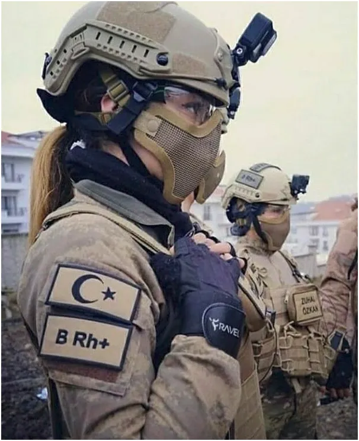
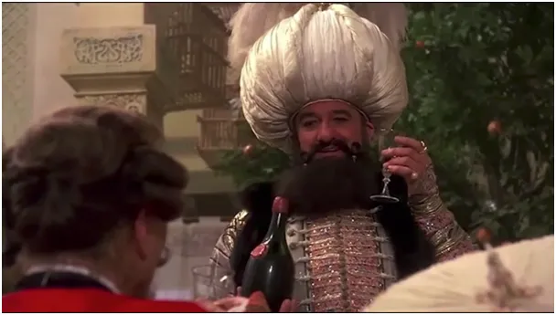
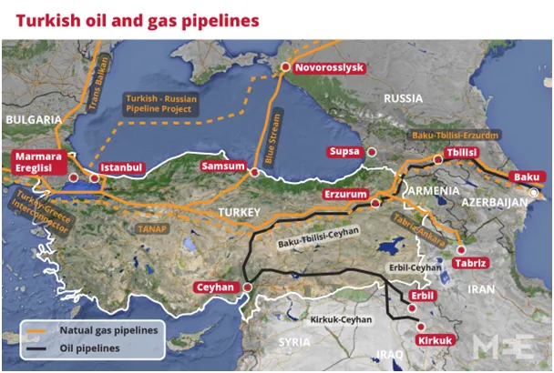
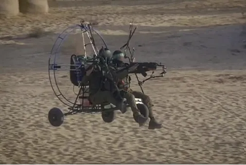
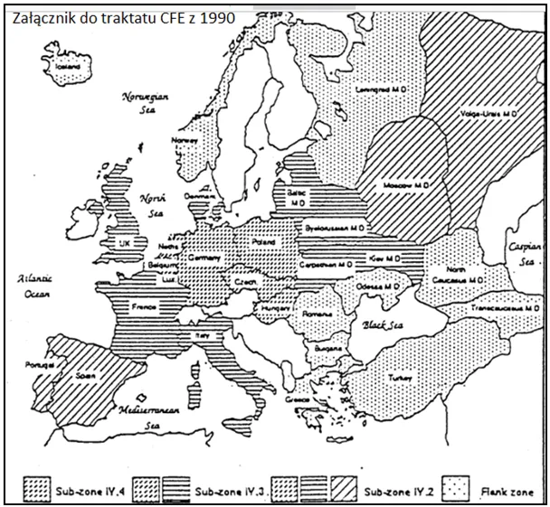

Europa 1990, Gaz(a) 2023
Wczoraj w nocy, 7 listopada 2023, Rosja, Wielka Brytania i USA ogłosiły, że wychodzą z traktatu o Europejskich Siłach Konwencjonalnych (CFE). Traktat ten był podpisany w 1990 roku między NATO a Układem Warszawskim, ale w procesie jego ratyfikacji rozpadał się Związek Radziecki, a Układ Warszawski przestał istnieć. To był triumf USA, które narzuciło sobie oraz Moskwie i jej azjatyckim satelitom niskie limity broni konwencjonalnej dając Zachodowi spore oszczędności i impuls rozwojowy.
Niestety zbiegło się to z demograficznymi skutkami lewicowej rewolucji na zachodzie, gdzie potomstwo z rodzin małodzietnych uległo złudzeniu, że się bogaci. Zmniejszająca się populacja państw rozwiniętych w tym czasie najzwyklej przejadała dziedzictwo swych przodków budowane z mozołem od końca XIX wieku. Wysoko opodatkowane nieruchomości musiały być wynajmowane. Rentierzy z północy przenosili się do tańszych krajów Południa, a z południa na północ napływały biedne masy, nowi wyborcy partii lewicowych, otrzymujący socjal, czyli pozór normalności.
Tak to USA, wstawiło Europę, a głównie Niemcy w zaklęty krąg rozdmuchiwania socjalu. Pamiętać należy, że 92 lata po zakończeniu I wojny światowej Niemcy spłaciły ostatnią ratę reparacji wojennych wyznaczonych na mocy postanowień Traktatu Wersalskiego. Ostatni przelew w wysokości 70 mln euro z Bundesbanku poszedł na konta rządów Wielkiej Brytanii i Francji w 2010 roku. Ale mieliśmy potem przegraną IIWojnę Światową. Jej faktyczne zakończenie miało miejsce całkiem niedawno, gdy Niemcy spłaciły reparacje za tę II wojnę i próbowały odbudować na "ruskim gazie" swoje imperium. Armia niemiecka, "Bundeswehra", jest częścią struktur NATO i jest całkowicie pod kontrolą USA.
Niestety, z korzyścią dla USA rura z gazem w roku 2022 uległa awarii na skutek tajemniczej detonacji, i Niemcy wraz z Europą zostały zmuszone do zakupu droższego gazu od USA. Misterny plan "Zielonego Ładu" legł w gruzach. Ciężka broń limitowana przez traktat z 1990 (CFE) przestała być użyteczna w obliczu nowych technologii, głównie dronów. Obecnie na terenie Ukrainy trwa sprawdzanie swych wzajemnych możliwości i zarazem kosztowna utylizacja przestarzałego sprzętu pancernego i lotniczego. Płaci głównie Europa i Ukraina, USA dodrukuje "zielonych"

i zwinie inflację kolejnymi emisjami obligacji. Kosztujące dziesiątki milionów czołgi są bezbronne przed obiektywami dronów ze styropianu kupowanymi anonimowo w chińskim sklepie internetowym Alibaba. Strony konfliktu, ostrożnie używają swych najnowszych wynalazków, aby się nie odsłonić za bardzo. Na arenę światową dumnie wchodzą kraje, które już wiele lat temu zainwestowały w nowe technologie w zbrojeniach. Liderem jest tu Turcja, której pochód do potęgi miał swój początek właśnie z powodu traktatu z 1990 r. (CFE), który redukował europejskie ciężkie uzbrojenie. Aby nie niszczyć nowoczesnego sprzętu Amerykanie przerzucili go do Turcji, która była niedozbrojona i znajdowała się w strefie o wyższych limitach.

Obecnie Turcja prowadzi swoją własną politykę i jako druga armia NATO otwarcie sprzeciwia się USA, gdy jej interesy nie idą w parze.

Turcja jest obecnie wielkim hubem gazowym, zaopatruje Europę od południa gazem rosyjskim, kaspijskim, irackim i każdym jaki sobie w Azji tanio kupi. Jest to absolutnie nie po drodze z pomysłem USA na Europe, ale Amerykanie mają teraz tyle pożarów na głowie, że nie mogą tworzyć sobie nowych wrogów i blokować Turków w ich ekspansji.

Turcja była od 300 lat naszym strategicznym sojusznikiem, niestety zrobiliśmy wszystko, aby relacje polsko tureckie pogrzebać. Mamy obecnie nowe rozdanie na świecie i w Polsce, niech to będzie okazja do odnowienia relacji z Wielkim Sułtanem, on może wiele.
Paweł Klimczewski